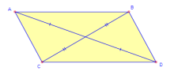
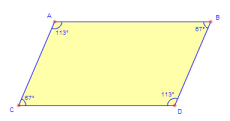
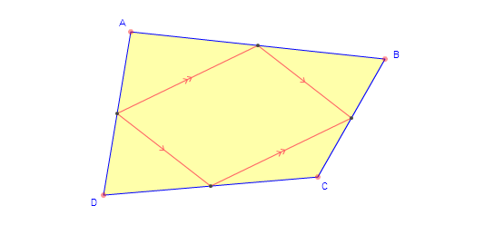

A parallelogram is a quadrilateral with opposite sides parallel. But there are various tests that can be applied to see if something is a parallelogram.
It is the "parent" of some other quadrilaterals, which are obtained by adding restrictions of various kinds:
| Base | Any side can be considered a base. Choose any one you like. If used to calculate the area (see below) the corresponding altitude must be used. In the figure above, one of the four possible bases and its corresponding altitude has been chosen. |
| Altitude (height) |
The altitude (or height) of a parallelogram is the perpendicular distance from the base to the opposite side (which may have to be extended). In the figure above, the altitude corresponding to the base CD is shown. |
| Area | The area of a parallelogram can be found by multiplying a base by the corresponding altitude. See also Area of a Parallelogram |
| Perimeter | The distance around the parallelogram. The sum of its sides. See also Perimeter of a Parallelogram |
| Opposite sides |
Opposite sides are congruent (equal in length) and parallel. As you reshape the parallelogram at the top of the page, note how the opposite sides are always the same length. |
| Diagonals | Each diagonal cuts the other diagonal into two equal parts, as in the diagram below.
 See Diagonals of a parallelogram for an interactive demonstration of this. |
| Interior angles |
Opposite angles are equal as can be seen below. Consecutive angles are always supplementary (add to 180°)  For more on both these properties, see Interior angles of a parallelogram. |

If you find the midpoints of each side of any quadrilateral, then link them sequentially with lines, the result is always a parallelogram.This may seem counter-intuitive at first, but see Parallelogram inscribed in any quadrilateral for an animated exploration of this fact.